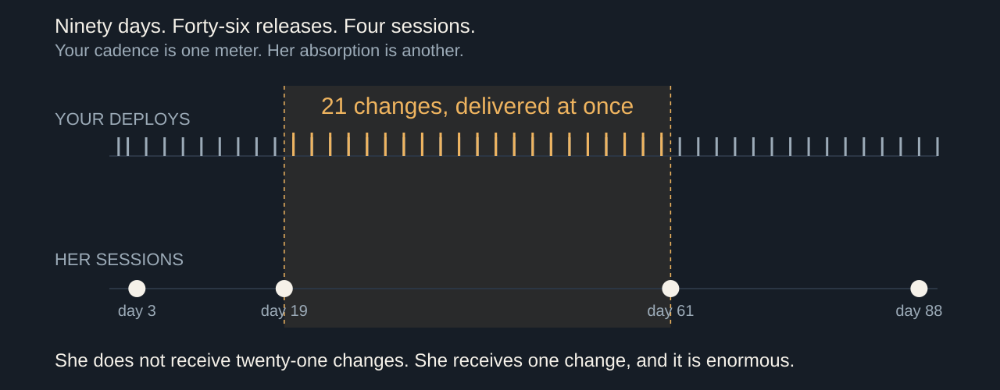
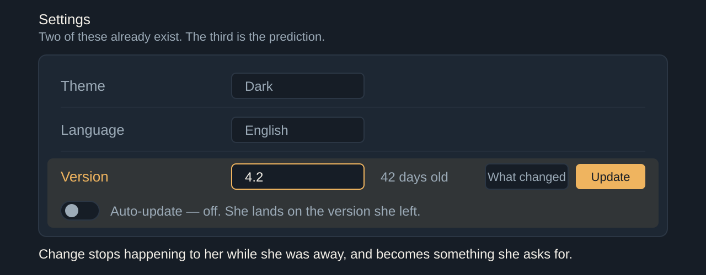

Turn Your Thinkin' Tokens Up to 11 · Dan Levy

What · who · when · shape · reversibilityEvery axis commits somebody who is not in this room

Don't count what it cost you to build.Count what it costs them to relearn.